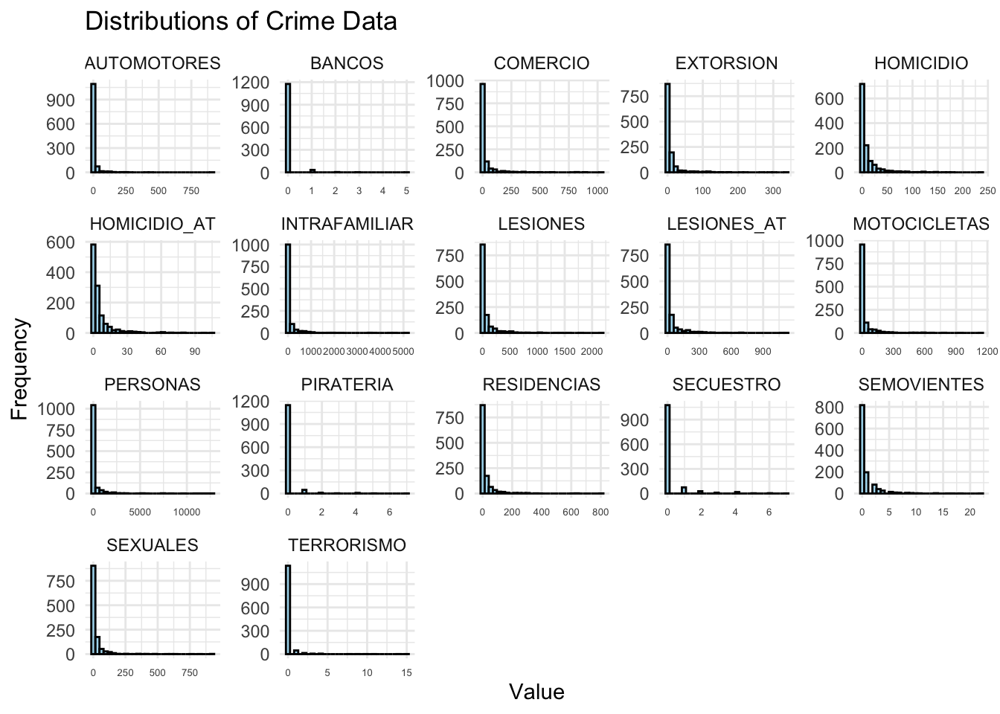

A skewness of \(( 0 )\) indicates a perfectly symmetric distribution. Positive skewness \(( g_1 > 0 )\) signifies a longer tail on the right side of the distribution, while negative skewness \(( g_1 < 0 )\) indicates a longer tail on the left. The code below calculates skewness for all numeric columns in delitos_data and presents the results in a formatted table:
A skewness of \(( 0 )\) indicates a perfectly symmetric distribution. Positive skewness \(( g_1 > 0 )\) signifies a longer tail on the right side of the distribution, while negative skewness \(( g_1 < 0 )\) indicates a longer tail on the left. The code below calculates skewness for all numeric columns in delitos_data and presents the results in a formatted table:
A skewness of \(( 0 )\) indicates a perfectly symmetric distribution. Positive skewness \(( g_1 > 0 )\) signifies a longer tail on the right side of the distribution, while negative skewness \(( g_1 < 0 )\) indicates a longer tail on the left. The code below calculates skewness for all numeric columns in delitos_data and presents the results in a formatted table:
A skewness of \(( 0 )\) indicates a perfectly symmetric distribution. Positive skewness \(( g_1 > 0 )\) signifies a longer tail on the right side of the distribution, while negative skewness \(( g_1 < 0 )\) indicates a longer tail on the left. The code below calculates skewness for all numeric columns in delitos_data and presents the results in a formatted table:
SEMOVIENTES AUTOMOTORES BANCOS PIRATERIA
Min. : 0.000 Min. : 0.000 Min. :0.00000 Min. :0.0000
1st Qu.: 0.000 1st Qu.: 0.000 1st Qu.:0.00000 1st Qu.:0.0000
Median : 0.000 Median : 0.000 Median :0.00000 Median :0.0000
Mean : 0.837 Mean : 8.995 Mean :0.04197 Mean :0.1029
3rd Qu.: 1.000 3rd Qu.: 3.000 3rd Qu.:0.00000 3rd Qu.:0.0000
Max. :22.000 Max. :909.000 Max. :5.00000 Max. :7.0000
1.2 Graphical analysis
# Load necessary librarylibrary(ggplot2)library(tidyr)# Transform the data to a long format for ggplotdelitos_long <- delitos_data %>%select(where(is.numeric)) %>%# Select only numeric columnspivot_longer(cols =everything(), names_to ="Crime Type", values_to ="Value")# Create faceted histogramsggplot(delitos_long, aes(x = Value)) +geom_histogram(bins =30, fill ="skyblue", color ="black", alpha =0.7) +facet_wrap(~`Crime Type`, scales ="free") +# Facet by crime typetheme_minimal() +labs(title ="Distributions of Crime Data",x ="Value",y ="Frequency" ) +theme(axis.text.x =element_text(size =5) # Reduce the font size of X-axis text )

Log-transformed crime data distributions
# Transform the data to long format and apply log transformationdelitos_long_log <- delitos_data %>%select(where(is.numeric)) %>%mutate(across(everything(), ~log(.x), .names ="{col}")) %>%# Log transform (log(x + 1) to avoid log(0))pivot_longer(cols =everything(), names_to ="Crime Type", values_to ="Log Value")# Create faceted histograms for log-transformed valuesggplot(delitos_long_log, aes(x =`Log Value`)) +geom_histogram(bins =30, fill ="skyblue", color ="black", alpha =0.7) +facet_wrap(~`Crime Type`, scales ="free") +# Facet by crime typetheme_minimal() +labs(title ="Log-Transformed Distributions of Crime Data",x ="Log Value",y ="Frequency" ) +theme(axis.text.x =element_text(size =3) # Reduce the font size of X-axis text )